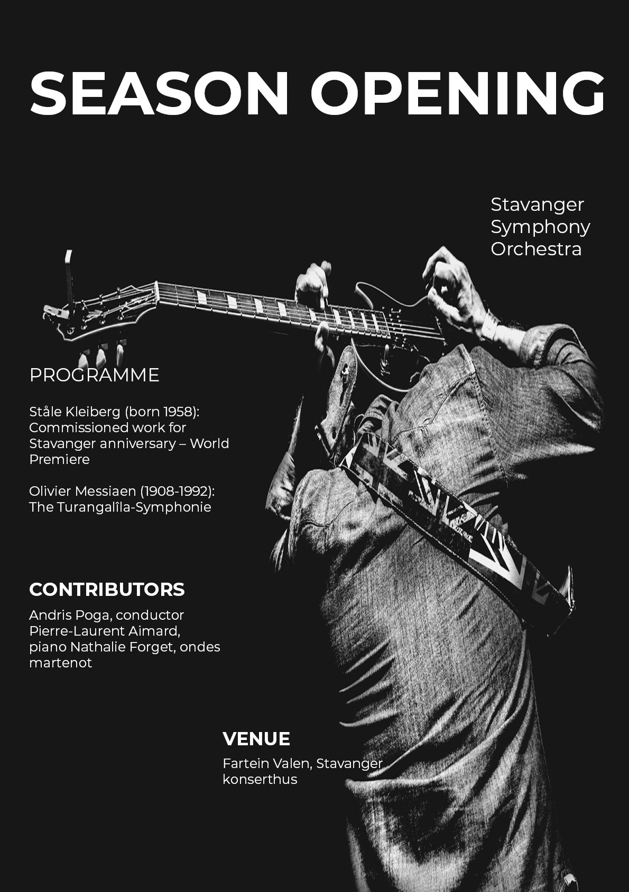

Graphic Design History
A brochure presenting graphic design period
The Graphic Design Department at Noroff is planning a pop-up exhibition at their Bergen campus and the exhibition will be about the styles that emerged in graphic design from 1950-1980. In this task we are asked to design a creatively folded leaflet with visually striking graphics for visitors to take home as souvenirs. The leaflet should contain the stories of the of four styles in graphic design from 1950-1980. The following must be included in the leaflet: International Typographic Style/Swiss Style (ca.1950 - late 1960), Pop Art Style (ca.1950 - 1970), Psychedelic Poster Style (ca.1960 - mid 1970) and New Wave/Punk Style (ca.1970 - mid 1980). To view the print ready pdf version of the completed leaflet, click here .

Leaflet Design

Leaflet Design

Pop Art Style

Swiss Style

Psychedelic Poster Style

New Wave-Punk Style